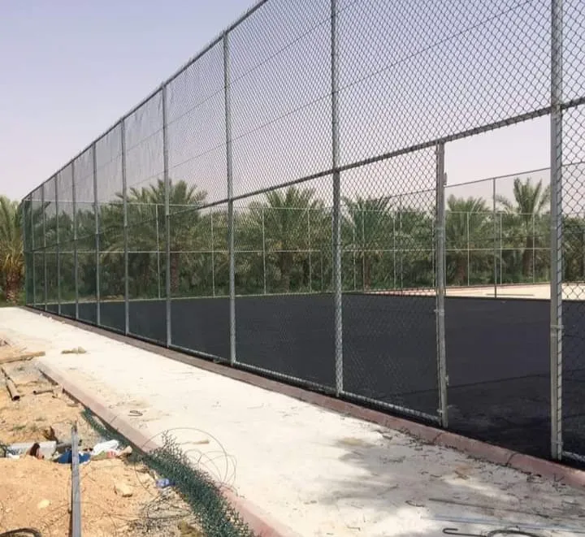
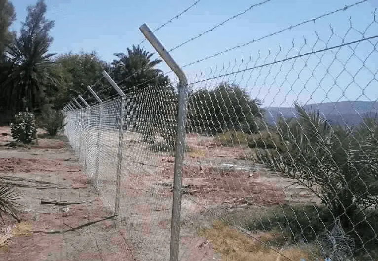
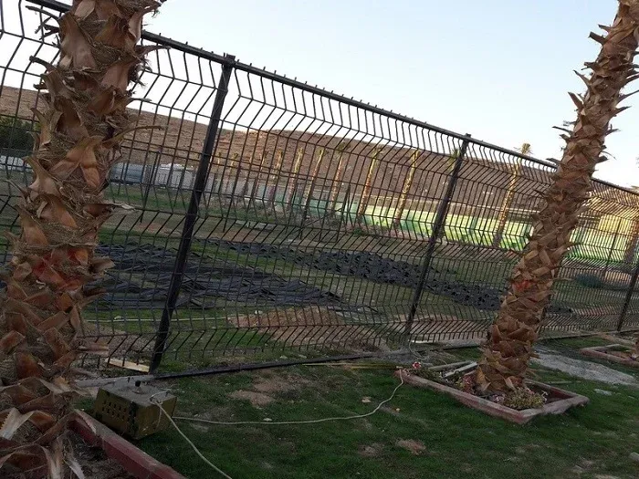
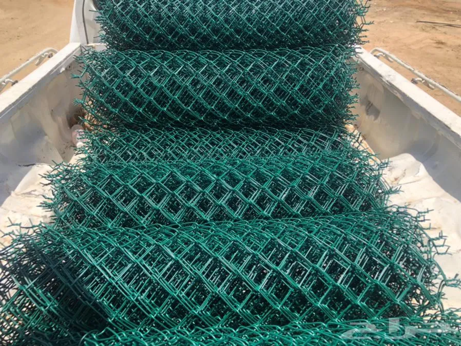

حماية المزارع والمحاصيل
تركيب شبوك مزارع ومحميات زراعية
حلول تسوير هندسية متطورة لحماية مزارع النخيل، المحميات، وحظائر المواشي في الرياض وضواحيها والمدينة المنورة
أعلى مواصفات الحماية
شبوك مزارع متينة تتحمل أقسى الظروف الجوية
تعد حماية المزرعة من الأولويات للحفاظ على المحاصيل والمواشي والمعدات. نحن نوفر تشكيلة واسعة من شبوك المزارع المصنوعة من الأسلاك المجلفنة عالية السماكة (Galvanized Wire) والمقاومة للصدأ والتآكل الناتج عن الرطوبة والأملاح، بالإضافة إلى الشبوك الملبسة بمادة الـ PVC الخضراء ذات المظهر الجمالي المتميز.
أنواع شبوك المزارع المتوفرة:
- ✔ شبوك مجلفنة حار: مقاومة للصدأ والتآكل لسنوات طويلة بأقطار أسلاك متنوعة (من 2.5 مم حتى 4.5 مم).
- ✔ شبوك بي في سي (PVC) الأخضر: توفر مظهراً طبيعياً خلاباً مع حماية مضاعفة ضد أشعة الشمس الحارقة.
- ✔ شبوك حظائر الأغنام والإبل: فتحات ضيقة تمنع خروج الماشية أو دخول الحيوانات المفترسة والكلاب الضالة.
- ✔ أبواب وبوابات مزارع سحابة ومفصلية: بأحجام تسمح بمرور المعدات والشاحنات الزراعية بسلاسة.
طلب تسعير شبوك مزارع
أدخل الطول التقريبي للمزرعة وسنتواصل معك بأفضل سعر للمتر:
المشاريع المنفذة
معرض أعمال تركيب شبوك المزارع
صور حصرية لأعمال تسوير المزارع والمحميات والحظائر التي قمنا بتنفيذها بأعلى معايير الإتقان.

تسوير مزرعة نخيل متكاملة

شبوك مجلفنة مع قواطع داخلية

شبك PVC أخضر استراحات ومزارع

تركيب بوابات حديد للمزارع

شبوك حظائر مواشي متينة

تأسيس قواعد صلبة للمزارع

سياج حماية مزارع شاسعة

تسوير أراضي زراعية بالمدينة